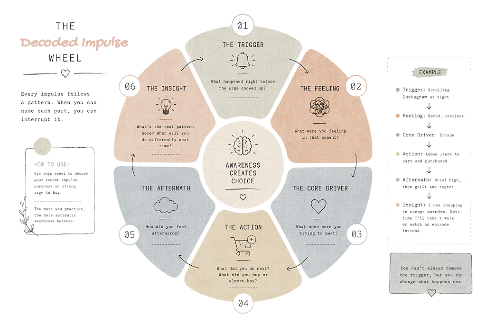
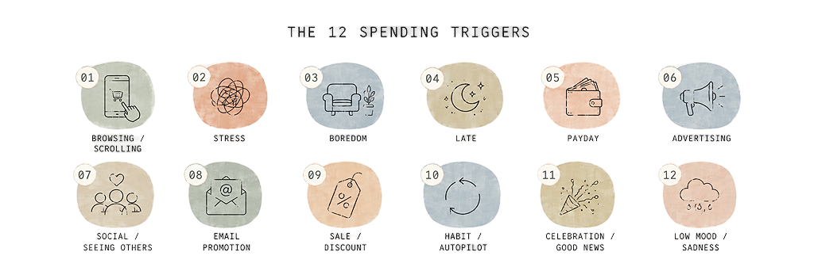
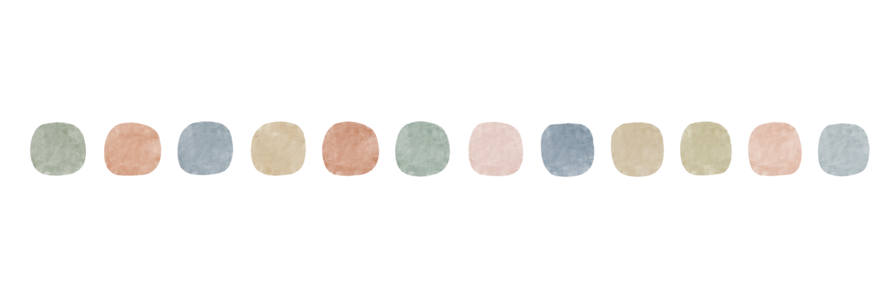
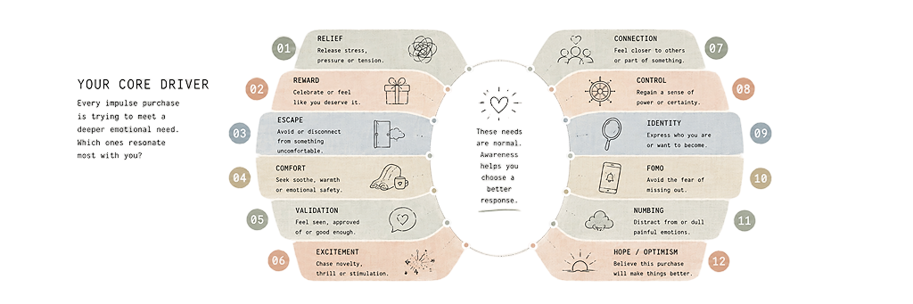
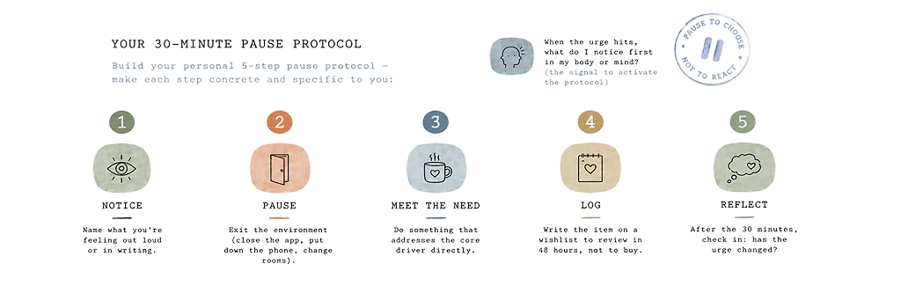
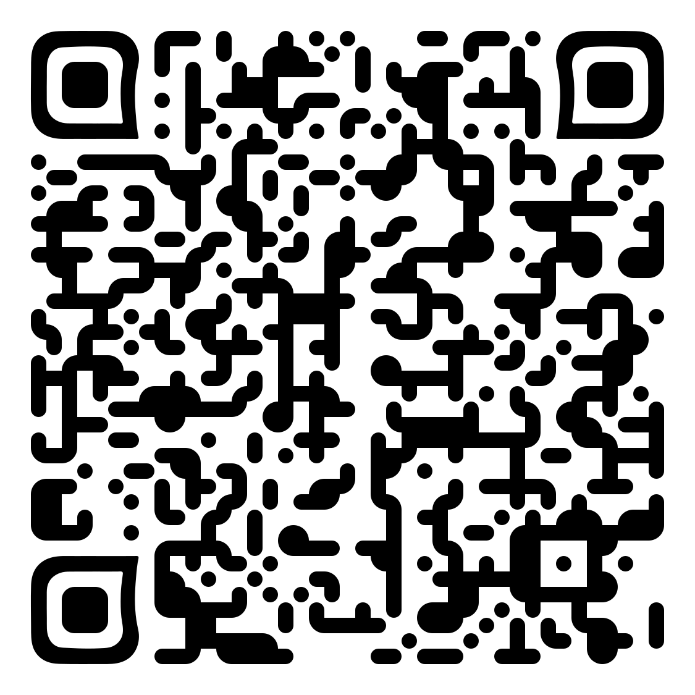

All fields are interactive. You can work through all 10 exercises in one session, or pick up one at a time over a week. There's no right way — just honest engagement. The exercises build on each other, so starting at Exercise 1 is recommended. When you're ready to continue tracking daily, Pause (the free browser-based app) picks up exactly where this workbook leaves off.
Before we decode anything, let's establish your baseline — how you currently feel about your spending, not what the numbers say. Honest first impressions are more useful than curated ones.
Instructions: Answer each question quickly. Don't overthink — your first instinct is usually the most accurate data you have.
Remember: This workbook isn't about willpower or discipline. It's about understanding. The goal after these 10 exercises is not to spend zero — it's to spend with awareness.
Most people have 2–3 dominant triggers that repeat. The goal isn't to eliminate them — triggers are a normal part of life. The goal is to recognise yours so they lose their automatic power.

A trigger is just the match. The fire is something deeper — an emotional need the purchase is attempting to meet. We'll decode that in Exercise 3.
Think back to 5 purchases from the last 2–4 weeks — bought or nearly bought. For each one, identify the trigger (what set it off) and the core driver (the emotional need underneath). The driver is the real answer.
Core drivers reference: relief · reward · escape · comfort · validation · excitement · connection · control · identity · FOMO· numbing · hope
| Item / Purchase | Bought or Resisted? | Trigger | Core Driver | How you felt after |
|---|---|---|---|---|
The key shift: Once you can name "I was buying for escape, not because I needed the thing" — you've broken the automatic loop. The urge doesn't disappear, but it stops being invisible.

Your most frequent core driver is the emotional need that your spending keeps trying to answer. Understanding it more fully — where it comes from, what else it responds to — is where lasting change lives.

The need itself is never the problem. Relief, escape, comfort, connection — these are all legitimate human needs. The question isn't "how do I stop needing this?" It's "what would genuinely meet this need, in a way I'll feel good about tomorrow?"
Not every trigger connects to the same need — and not every need gets activated by the same trigger. This matrix helps you see which combinations are most live for you. Click any cell that represents a real pairing you've experienced.
This combination is the target. In Exercises 7 and 8, you'll build a specific protocol and if-then plan designed exactly for this trigger × driver pairing. The more specific the plan, the more effective it is.
Environment shapes behaviour as much as intention does. This exercise helps you map the specific contexts, apps, times, and emotional states that raise your spending risk — so you can make small environmental changes that have outsized impact.
Small friction = big results. Moving a shopping app one folder deeper, charging your phone outside the bedroom, or setting a 9pm screen-off habit can reduce high-risk exposure by more than 50% without requiring any willpower at all.
The "wait 30 minutes" advice is useless without knowing what to do during those 30 minutes. This exercise helps you build a personalised interrupt protocol — specific to your trigger, your environment, and your core driver.

This protocol becomes automatic with repetition. The first few times will feel effortful. By the 5th or 6th time, your brain will start running it before you consciously decide to. That's the habit forming.
An if-then plan is a single sentence that pre-decides your response to a specific trigger. Research consistently shows that people who write if-then plans are significantly more likely to follow through than those who rely on motivation alone. The key is specificity.
If [trigger + context], then I will [specific action that meets the need differently]."
"If I'm in bed after 10pm and feel an urge to open a shopping app, then I'll put my phone on charge, make a drink, and write one thing I'm looking forward to tomorrow."
"If I want to buy something impulsively, then I'll wait 30 minutes." (No specific
context has been identified. No specific action. There is nothing to anchor the habit to.)
The Pause app generates an if-then plan automatically from your decoded data after you've logged at least 5 impulse items. Compare yours here with the one the app generates — they'll often point to the same core truth.
Use this grid for the next 7 days. Each evening, tick what applies. You're not aiming for a perfect week — you're aiming for an honest one. Pattern recognition is the goal here, not performance.
The Pause app makes this automatic. Once you're logging daily, your streak, no-spend days, and resisted items are tracked and charted for you — so this manual grid becomes a full insights panel over time.
These 8 prompts close out the workbook — and are the same ones inside the Pause app's Weekly Reflection tab. Return to them once a week. Honest, regular reflection is how short-term awareness becomes long-term change.
You've completed all 10 exercises. You now have a clearer picture of your triggers, your core drivers, and a personalised plan. Pause — the free browser-based app this workbook is built around — is where you take these insights and build them into a daily practice. Open it in any browser. No login. No download. Start with the Daily Log.
pause.futuresanctuary.co · free to use

Tip: your browser may add its own page title, URL, and date. Look for "Headers and footers" under "More settings" in the print dialog and switch it off for a cleaner page.
A backup file with all your answers — re-import it later on this device or another.